Graphical User Interface (GUI)¶
Overview¶
The pyNastran GUI was originally developed to solve a data validation problem. It’s hard to validate that things like coordinate systems were correct if you can’t look at the geometry in a native format. As time went on, niche features that were needed (e.g., aero panels) that were not supported natively in Patran 2005, were added. The goal is not to replace a code like Patran or FEMAP, but instead complement it.
Since the intial development, the GUI has become significantly more capable by adding features such as displacements and forces, so the need for a code like Patran has decreased, but will not be eliminated.
Introduction¶
The Graphical User Interface (GUI) looks like:
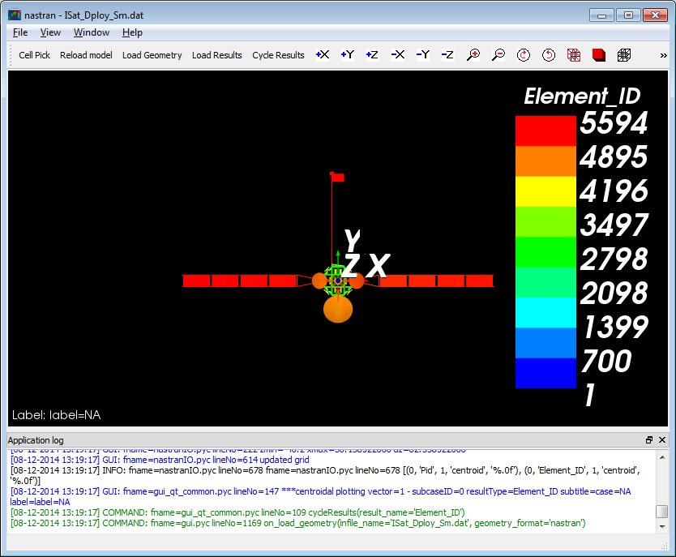A somewhat messy, but more featured image:
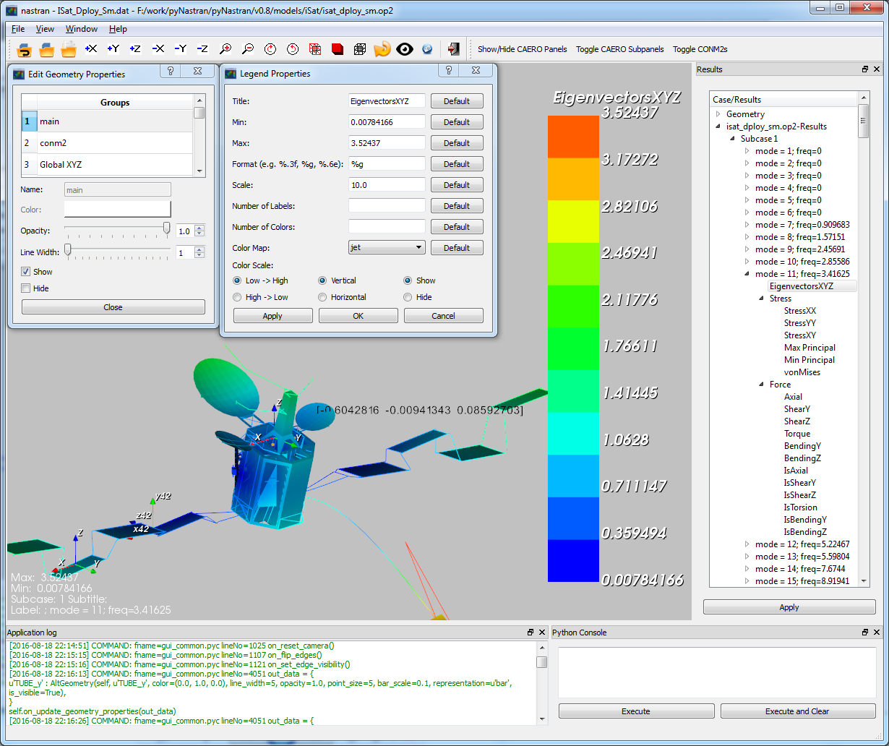The GUI also has a sidebar and transient support.
Advantages of pyNastranGUI¶
- command line interface for loading models
- simple scripting
- nice looking models
- intuitive rotation
- niche features - aero panels - aero splines - aero spline points - control surfaces
- custom results from a CSV file
- 64 bit support - Patran 2005 can’t read in models that pyNastranGUI can - not an advantage for newer versions
- animated gifs
Advantages of Patran/FEMAP¶
- CAD geometry support (e.g., IGES, Parasolid)
- geometry creation (e.g., points, surfaces)
- meshing
- edit materials/properties
- much better picking support
- much better groups
- better use of memory
- grid point forces
- many more…
Purpose of additional formats¶
Over time, pyNastran has also added converter and GUI support for additional formats. Nastran is not the only piece of the analysis puzzle and there is a need for niche engineering formats.
While, you could convert a Cart3d model (a simple triangulation) to another format like Nastran, you would need to map the geometry/result quantity of interest (e.g., Mach Number) to something like pressure. That’s unintuitive and also requires writing an ill-defined format converter. It’s nice to load it natively as you can also automatically create other quantities (e.g., the bounding CFD box, free edges).
Finally, adding support for alternate formats drives GUI development. The model reload functionality was added to address loading the latest time step of a Usm3d model. It was repurposed to reload the geometry for other formats. This is very useful when creating aero panels and you want to see your changes. The groups functionality benefits all formats.
Additonal formats include:
- panair
- cart3d
- stl
- tecplot
- AFLR
- bsurf
- surf
- ugrid
- usm3d
Setup Note¶
Download the entire package from Github or just the GUI executable.
If you download the source, make sure you follow the Installation and use setup.py develop and not setup.py install.
- For the GUI, the master requires:
- Python 3.7-3.8
- any version of numpy
- any version of scipy
vtk==7orvtk==8orvtk==9(best in 7 or 8)PyQt5orPySide2- other minor packages
Running the GUI¶
On the command line:
>>> pyNastranGUI
To view the options:
>>> pyNastranGUI --help
Usage:
pyNastranGUI [-f FORMAT] INPUT [-o OUTPUT]
[-s SHOT] [-m MAGNIFY]
[-g GSCRIPT] [-p PSCRIPT]
[-u POINTS_FNAME...] [--user_geom GEOM_FNAME...]
[-q] [--groups]
pyNastranGUI [-f FORMAT] INPUT OUTPUT [-o OUTPUT]
[-s SHOT] [-m MAGNIFY]
[-g GSCRIPT] [-p PSCRIPT]
[-u POINTS_FNAME...] [--user_geom GEOM_FNAME...]
[-q] [--groups]
pyNastranGUI [-f FORMAT] [-i INPUT] [-o OUTPUT...]
[-s SHOT] [-m MAGNIFY]
[-g GSCRIPT] [-p PSCRIPT]
[-u POINTS_FNAME...] [--user_geom GEOM_FNAME...]
[-q] [--groups]
pyNastranGUI -h | --help
pyNastranGUI -v | --version
Primary Options:
-f FORMAT, --format FORMAT format type (avus, cart3d, lawgs, nastran, panair,
plot3d, stl, surf, tetgen, ugrid, usm3d)
-i INPUT, --input INPUT path to input file
-o OUTPUT, --output OUTPUT path to output file
Secondary Options:
-g GSCRIPT, --geomscript path to geometry script file (runs before load geometry)
-p PSCRIPT, --postscript path to post script file (runs after load geometry)
-s SHOT, --shots SHOT path to screenshot (only 1 for now)
-m MAGNIFY, --magnify how much should the resolution on a picture be magnified [default: 5]
--groups enables groups
--user_geom GEOM_FNAME add user specified points to an alternate grid (repeatable)
-u POINTS_FNAME, --user_points add user specified points to an alternate grid (repeatable)
Info:
-q, --quiet prints debug messages (default=True)
-h, --help show this help message and exit
-v, --version show program's version number and exit
The standard way to run the code is simply by launching the exe. Alternatively, you can call it from the command line, which can directly load a model:
>>> pyNastranGUI -f nastran -i model.bdf -o model1.op2 -o model2.op2
The solid_bending.bdf and solid_bending.op2 files have been included
as examples that work in the GUI. They are inside the “models” folder
(at the same level as setup.py).
You can also run it like:
>>> pyNastranGUI model.bdf model1.op2
Here the code will guess based on your file extension what your file format is.
If you want to load a second OP2, you must use -o model2.op2.
Features¶
- fringe plot support
- elemental/nodal results
- custom CSV results
- deflection results
- force results
- command line interface
- scripting capability
- high resolution screenshot
- show/hide elements
- can edit properties (e.g. color/opacity/size) using
Edit Geometry Properties...on theViewmenu- legend menu
- animation menu
- save/load view menu
Minor Features¶
- snap to axis
- clipping customization menu
- edges flippable from menu
- change label color/size menu
- change background color
- attach simplistic custom geometry with the
Load CSV User Geometryor the-user_geomoption- additional points may be added with the
Load CSV User Pointsor the--user_pointsoption
Nastran Specific Features¶
- attach multiple OP2 files
- supports SPOINTs
- displacement/eigenvectors/nodal force results
- scale/phase editable from legend menu
- rotated into global frame
- Edit Geometry Properties
- SPC/MPC/RBE constraints
- CAERO panel, subpanels
- AEFACT control surfaces
- SPLINE panels/points
- bar/beam orientation vectors
- CONM2
BDF Requirements¶
- Entire model can be cross-referenced
- Same requirements as BDF (include an executive/case control deck, define all cross-referenced cards, etc.)
Versioning Note¶
The GUI download is typically newer than the latest release version.
Additional Formats¶
Some of the results include:
Nastran ASCII input (*.bdf, *.nas, *.dat, *.pch, *.ecd); binary output (*.op2)
geometry
- node ID
- element ID
- property ID
- material ID
- thickness
- normal
- shell offset
- PBAR/PBEAM/PBARL/PBEAML type
- element quality (min/max interior angle, skew angle, taper ratio, area ratio)
real results
stress, strain
displacement, eigenvector, temperature, SPC forces, MPC forces, load vector
complex results
- displacement, eigenvector
Cart3d ASCII/binary input (*.tri); ASCII output (*.triq)
- Node ID
- Element ID
- Region
- Cp, p, U, V, W, E, rho, rhoU, rhoV, rhoW, rhoE, Mach
- Normal
LaWGS input (*.wgs)
Panair input (*.inp); output (agps, *.out)
- Patch ID
- Normal X/Y/Z
- Centroid X/Y/Z
- Area
- Node X/Y/Z
- Cp
STL ASCII/binary input (*.stl)
- Normal X/Y/Z
Tetgen input (*.smesh)
Usm3d surface input (*.front, *.cogsg); volume input (*.cogsg); volume output (*.flo)
- Boundary Condition Region
- Node ID
- Cp, Mach, T, U, V, W, p, rhoU
Features Overview¶
The View -> “Edit Geometry Properties” menu brings up:
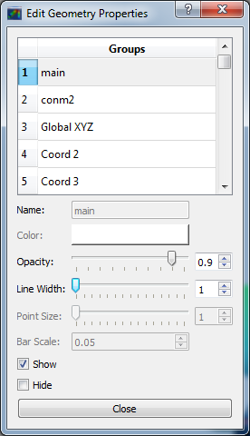This menu allows you to edit the opacity, line width, point size, show/hide various things associated with the model. The geometry auto-updates when changes are made.
The View -> “Modify Legend” menu brings up:
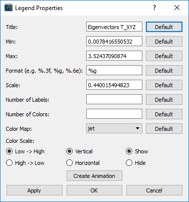This menu allows you to edit the max/min values of the legend as well as the orientation, number format (e.g. float precision) and deflection scale. Defaults are stored, so they may always be gone back to. The geometry will update when Apply/OK is clicked. OK/Cancel will close the window.
The animation menu is a sub-menu found on the legend menu.
Hover over the cells for more information.
You must load the animation menu when a displacement-like result is active.
You may then change to a scalar result to show during the animation. For the
following SOL 101 static deflection result, Animate Scale is used to scale
the current result (Displacement). The iCase value corresponds to
case that is currently active (Displacement) and is automatically populated when
you click the Create Animation button from the Legend menu.
If you would like to plot a separate result (e.g., Node ID), switch to that
result. The iCase value will not change. When you click Run All, the iCase
value is pulled and the deflection shape is calculated. Make sure you actually
have a deflected geometry.
In your output folder, you will find:
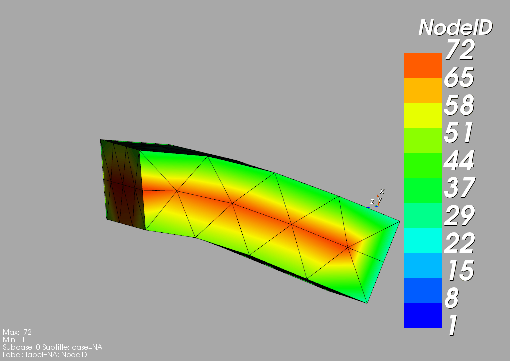If the file is too big, shrink the size of the window. Make the max deflection of the image fill the screen. Leave minimal whitespace.
Note
If unclickling Repeat? doesn’t disable gif looping, upgrade imageio.
Complex Mode Shapes are simple and similar to the Animate Scale option.
Here, the phase angle sweeps from 0 to 360 degrees. Note that this option only
shows up when you have a complex result for iCase.
This option is recommended only for constant time/frequency/load step results.
It is now necessary to learn how to set iCase. In the Application log, you’ll see:
COMMAND: fname=gui_qt_common.pyc lineNo=316 cycle_results(case=10)
Check your first (assume 10), second (assume 11), and final time step (assume 40)
for their iCase values.
For deflection results loaded from an OP2, the iCase Delta will be 1, but
depending on the frame rate and total time you want, you can skip steps.
Note that there is currently no way to plot a transient result other than the deflection unless you want to use scripting.
The preferences menu allows you to change various settings. These will be remembered when you load model again. The menu looks like:
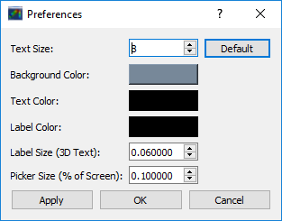Hover over the cells for more information.
Click on the Probe button to activate probing. Now click on a node/element.
A label will appear . This label will appear at the centroid of an elemental result
or the closest node to the selected location. The value for the current result
quantity will appear on the model. You can also press the p button.
For “NodeID”, the xyz of the selcted point and the node in global XYZ space will be shown.
Labels may be cleared from the View menu.
Text color may also be changed from the View -> Preferences menu.
Note that for line elements, you need to be very accurate with your picking. Zooming in does not help with picking like it does for shells.
Click the following button and click on the rotation center point of the model. The model will now rotate around that point.
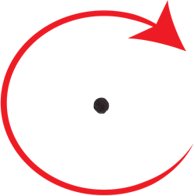Alternatively, hover over the point and press the f key.
Clipping let’s you see “into” the model.
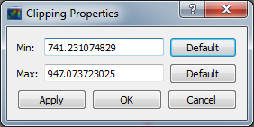Zoom in and hover over an element and press the f key.
The model will pan and now rotate around that point.
Continue to hold f while the model recenters.
Eventually, the frame will clip.
Reset the view by clicking the Undo-looking arrow at the top.
Note that clipping currently doesn’t work…
The View -> “Modify Groups” menu brings up:
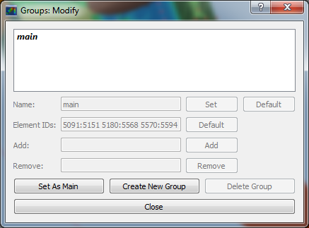Had you first clicked View -> “Create Groups by Property ID”, you’d get:
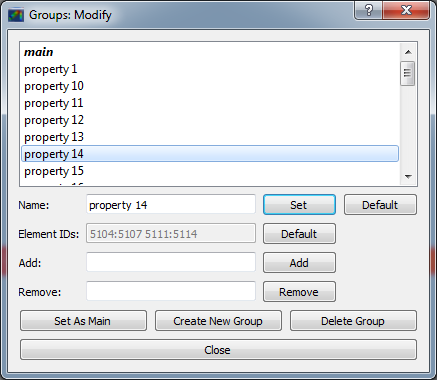Add/Remove use the “Patran-style” syntax:
# elements 1 to 10 inclusive
1:10
# elements 100 to the end
100:#
# every other element 1 to 11 - 1, 3, 5, 7, 9, 11
1:11:2
The name of the group may also be changed, but duplicate names are not allowed. The “main” group is the entire geometry.
The bolded/italicized text indicates the group that will be displayed to the screen.
The defaults will be updated when you click Set As Main. This will also update
the bolded/italicided group.
The eyeball icon brings up a camera view. You can set and save multiple camera views. Additionally, views are written out for scripting. You can script an external optimization process and take pictures every so many steps.
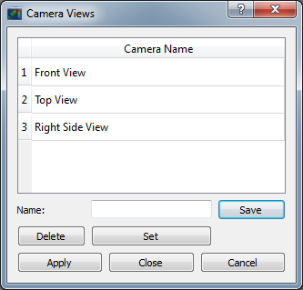User points allow you to load a CSV of xyz points. These may be loaded from within the GUI or from the command line.
# x, y, z
1.0, 2.0, 3.0
4.0, 5.0, 6.0
These will show up as points in the GUI with your requested filename.
User geometry is an attempt at creating a simple file format for defining geometry. This may be loaded from the command line. The structure will probably change.
The geometry may be modified from the Edit Geometry Properties menu.
# all supported cards
# - GRID
# - BAR
# - TRI
# - QUAD
#
# doesn't support:
# - solid elements
# - element properties
# - custom colors
# - coordinate systems
# - materials
# - loads
# - results
# id x y z
GRID, 1, 0.2, 0.3, 0.3
GRID, 2, 1.2, 0.3, 0.3
GRID, 3, 2.2, 0.3, 0.3
GRID, 4, 5.2, 0.3, 0.3
grid, 5, 5.2, 1.3, 2.3 # case insensitive
# ID, nodes
BAR, 1, 1, 2
TRI, 2, 1, 2, 3
# this is a comment
QUAD, 3, 1, 5, 3, 4
QUAD, 4, 1, 2, 3, 4 # this is after a blank line
Custom Elemental/Nodal CSV/TXT file results may be loaded. The order and length is important. Results must be in nodal/elemental sorted order. The following example has 3 scalar values with 2 locations. The corresponding model must have ONLY two nodes. By default, all results must be floatable (e.g., no NaN values).
# element_id, x, y, z
1, 1.0, 2, 3.0
2, 4.0, 5, 6.0
# element_id x y z
1 1.0 2 3.0
2 4.0 5 6.0
You may also assign result types.
# element_id(%i), x(%f), y(%i), z(%f)
1, 1.0, 2, 3.0
2, 4.0, 5, 6.0
Custom Elemental/Nodal CSV/TXT file results may be loaded. The order and length is important. Results must be in nodal/elemental sorted order. The following example has 3 scalar values with 2 locations. The model must have only two nodes.
# result_name
1.0 2 3.0
2.0 5 6.0
Nastran Static/Dynamic Aero solutions require custom cards that create difficult to view, difficult to validate geometry. The pyNastranGUI aides in creating models. The CAERO panels are seen when a model is loaded:
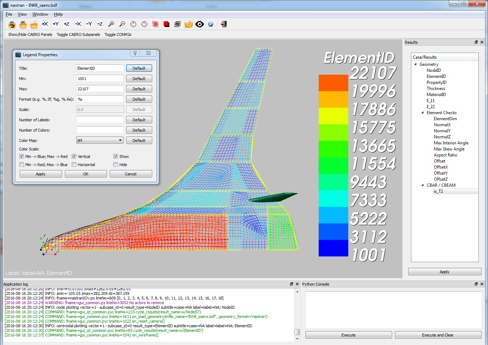Additionally, by clicking the Toggle CAERO Subpanels button,
the subpanels may be seen:
Additionally, flaps are shown from within the GUI. SPLINE surfaces
are also generated and may be seen on the View -> Edit Geometry Properties
menu.
Scripting¶
GUI commands are logged to the window with their call signature.
Scripting may be used to call any function in the GUI class.
Most of these commands are written to the COMMAND output.
For example, you can:
- load geometry
- load results
- plot unsupported result types
- custom animations of mode shapes
- high resolution screenshots
- model introspection
- create custom annotations
The scripting menu allows for custom code and experimentation to be written
without loading a script from a file. All valid Python is accepted.
Scripting commands should start with self. as they’re left off from the menu.
Local variables do not need this.
geomscript runs after the load_geometry method, while
postscript runs after load_results has been performed
import sys
self.on_take_screenshot('solid_bending.png', magnify=5)
sys.exit()
>>> pyNastranGUI solid_bending.bdf solid_bending.op2 --postscript take_picture.py
self.on_take_screenshot('solid_bending.png', magnify=5)
On the View -> Preferences menu, change Screenshot Magnify and click Apply.
Now take a screenshot.